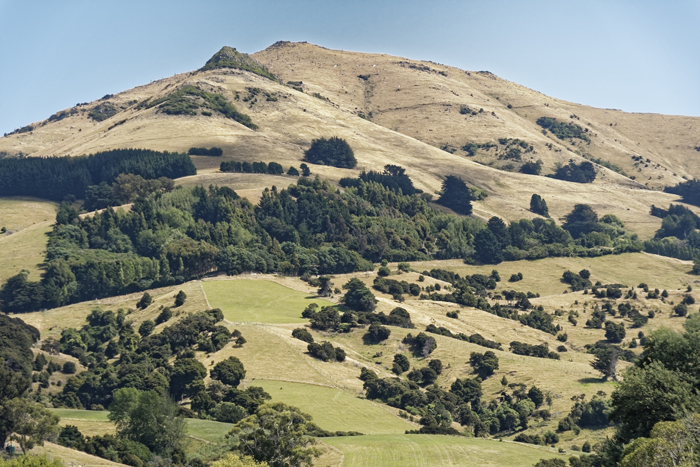

Banks Peninsula
Christchurch Tourist Location
Christchurch's Stunning Coastal Peninsula!
Banks Peninsula is a beautiful volcanic landscape located
just outside Christchurch. The peninsula is known for its
dramatic coastline, rolling hills, small bays, and scenic
views across the Pacific Ocean. Its unique landscape was
formed by ancient volcanic activity, creating a destination
with plenty of natural scenery to explore.
Visitors can explore the many coastal towns, walking tracks,
beaches, and viewpoints throughout the peninsula. The area
is also home to a variety of native wildlife, including
dolphins, seals, and seabirds. Visitors can enjoy activities
such as hiking, sightseeing, kayaking, wildlife tours, and
photography.
Banks Peninsula is a great destination for visitors who want
to experience New Zealand's natural scenery while staying
close to Christchurch. Some activities are free, while
guided tours and wildlife experiences can add to the overall
cost of a visit. Visitors should also consider fuel or
transport costs when planning their trip.
Facts:
- Located near Christchurch
- Formed by ancient volcanic activity
- Known for its dramatic coastline and hills
- Contains many beaches and small bays
- Home to native wildlife and seabirds
- Popular for hiking and sightseeing
- Great location for photography
- Wildlife tours and kayaking are available
Costs:
- Access to Banks Peninsula: Free
- Walking and sightseeing: Free
- Estimated food costs: $10-$30 per person
- Estimated fuel costs from Christchurch: $20-$50 return
- Kayaking and wildlife tours: approximately $50-$150 per person
- Estimated basic visit cost: $30-$80 per person